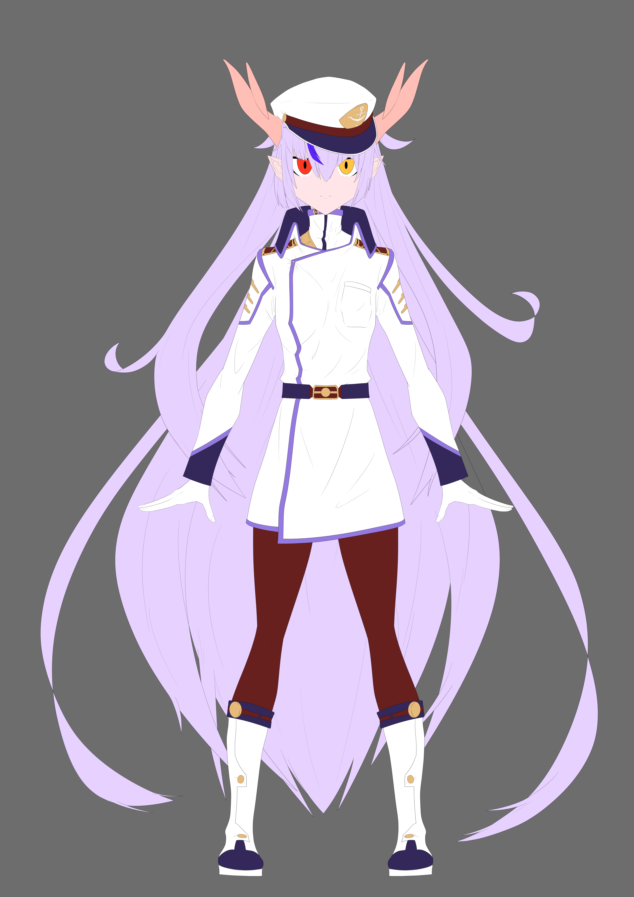
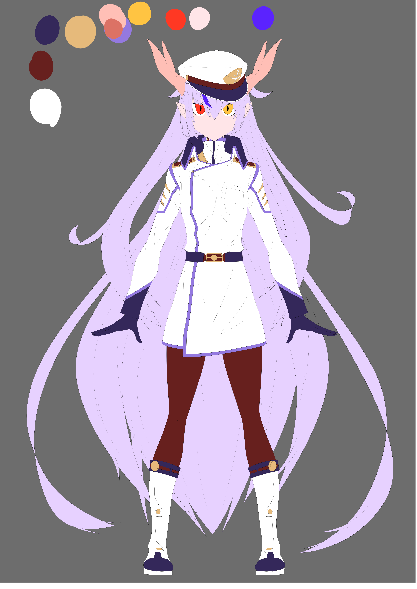

VT構想
一開始是由我和惠維慶一同想出來的角色，在兩人的胡言亂語中逐漸成形，之後便由我提出了軍人的想法，而因為是對應到龍岡的作業所以我便決定要將"龍"的屬性加進去，便在這之後開始著手繪製。
以下分為兩個大方向來解釋。
角色構想
從一開始的角色構想開始，我們就已經決定好要將角色的特色發展出來，而顏色設計的部分我一開始是想用黑色當作底，再用鮮艷的髮色來吸引人，但後來因為黑色筆竟屬於男性的顏色，再加上白色也能夠很好的襯托出其鮮豔的髮色，在視覺上也比黑色舒服不少，所以便選擇了此種配色方案，這段時間就是不停地修改人物的細節及線搞，修到最後就可以進行輸出並開始拆圖層了。

➤

➤

➤

➤

手動拆圖層
在創作完人物基本的插圖繪製後我開始進行了拆圖層的工作，其目的是因為要讓角色動起來，而各部件需要做適當的分開，再分完塗層後還要將原本被剪下的地方在畫上被覆蓋掉的部分，不然在做live 2d時移動後就會產生破綻。
Live 2D製作
一開始需要在角色分件的圖層上面套上變形用的錨點，依照變形程度的不同會分成little、heavy，也可以用鋼筆工具進行設定，在設定完錨點之後便可以將變形工具套上，在不同的物件上套用旋轉變形器或是彎曲變形器，便可以做出不同的效果，在這些變形器套用後便要開始設定位移參數，舍弟完後便可以到物理運算的系統中進行微調，在物理界面中便可以直接觀察自己是否有地方沒做好，有的話就必須要再重新做修正，修正完後便可以輸出並使用了。